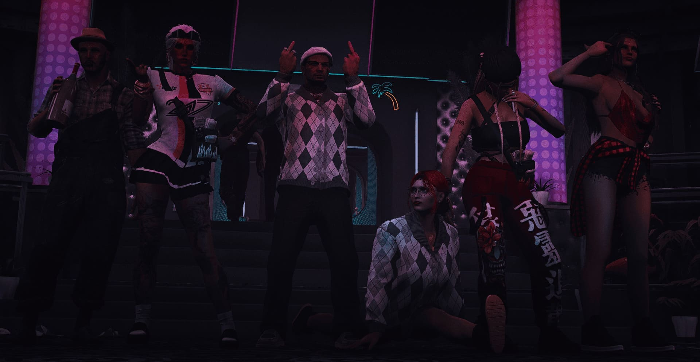
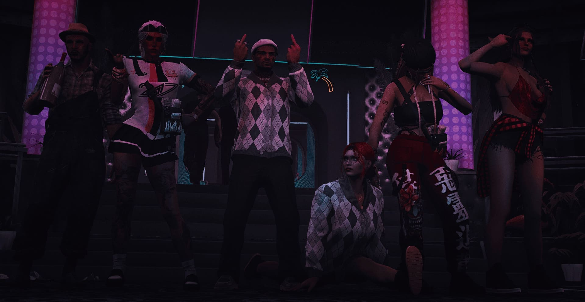
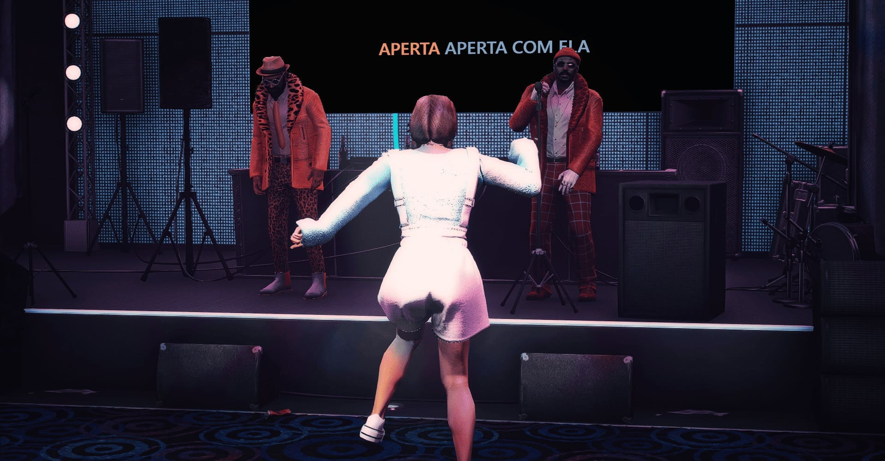
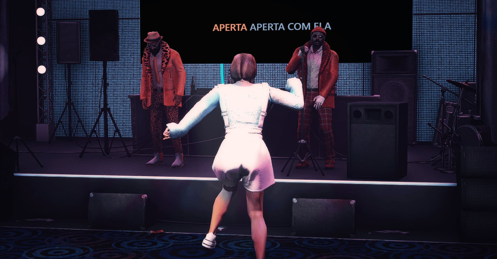

O Canto da Chaleira
Promovendo a criatividade. Enriquecendo a comunidade.
Promovendo a criatividade. Enriquecendo a comunidade.
A adrenalina tomou conta de Puerto Esperanza com a 1ª Concentração Motard dos Caveiras do Asfalto, um evento que celebrou liberdade, estrada e irmandade sobre duas rodas. Em parceria com O Canto da Chaleira, o encontro reuniu dezenas de motards, amigos e curiosos, numa jornada onde o rugir dos motores se misturou com música, dança e muita emoção.
O palco vibrou com as atuações energéticas do Grupo de Dança Thunder, que trouxe coreografias intensas e cheias de atitude, seguidas pela voz marcante de Cristóvão McDuffin e do carismático Zé Galo, que levou o público ao auge com a sua performance genuinamente popular e envolvente.
Um dos momentos mais aguardados da tarde foi o Desfile de Motas, onde máquinas impressionantes e personalidades marcantes passaram frente a um júri atento.


O Hog’s Pub, com atuação de Cristovão McDuffin, celebrou o Spooky Hog’s 2025 com uma noite de Halloween de arrepiar! No dia 28 de outubro, o restaurante transformou-se num verdadeiro cenário assombrado, repleto de música, energia e surpresas.
O evento contou com atuações temáticas, o irresistível Menu Halloween (disponível de 19 a 31 de outubro) e o Concurso de Fotografia Assombrada, com participação gratuita e um prémio de 15.000$ para a imagem mais criativa e aterradora.
Foi uma noite inesquecível, marcada pela diversão, pela imaginação e pelo espírito vibrante que só o Hog’s Pub sabe proporcionar!


Depois de muita preparação e expectativa, o grande dia finalmente chegou — a Cúpula abriu as suas portas para uma noite que ficou gravada na memória de Puerto Esperanza. A inauguração oficial, realizada no dia 22 de outubro, reuniu amigos, convidados e curiosos para celebrar o nascimento de um novo ícone da vida noturna da cidade.
A energia tomou conta do espaço desde os primeiros minutos, e quem comandou a pista foi o inconfundível DJ Diogo Canelas, com um set envolvente que fez vibrar cada canto da Cúpula. Ritmo, luzes e emoção misturaram-se numa experiência sensorial que marcou o início de uma nova era.


A cidade ganhou nova vida com o lançamento oficial da Revista PUERTA, uma criação brilhante de Lola Rodriguez. Moderna, ousada e profundamente ligada ao espírito urbano de Puerto Esperanza, a PUERTA chega como uma lufada de ar fresco no panorama editorial, trazendo conteúdos que misturam cultura, moda, lifestyle e tudo o que precisa de saber para estar sempre um passo à frente.
O evento de estreia transformou-se numa celebração à criatividade e à identidade local. Entre convidados especiais, sessões fotográficas improvisadas e muita conversa boa, a noite revelou o que torna esta revista tão única: a visão arrojada de Lola Rodriguez e o compromisso de levar ao público histórias, tendências e bastidores exclusivos — o verdadeiro inside que só quem vive Puerto Esperanza por dentro consegue contar.


O encanto do verão despediu-se em grande estilo com o Paleto’s Sunset, um evento mágico realizado numa pequena e acolhedora praia em Paleto. Numa colaboração perfeita entre o Container, a charmosa Quinta dos Milagres e o sempre presente Canto da Chaleira, a tarde transformou-se num cenário digno de postal — luz dourada, brisa suave e um ambiente feito para celebrar o melhor que o verão nos deixa.
A música tomou conta da praia com a voz poderosa e envolvente de Biannah Montana, que encantou todos com uma performance vibrante e envolvente. Logo depois, o ritmo subiu ainda mais com os beats de Diogo Canelas, que trouxe um set inesquecível, transformando o pôr do sol num verdadeiro espetáculo de cores, dança e boas vibrações.

O brilho das luzes refletido nas ondas marcou a noite inesquecível do Glamour no Iate, uma celebração exclusiva que uniu a irreverência do Malibu Club à companhia contagiante do restaurante Container, com o apoio especial do Canto da Chaleira. Em pleno alto mar, um elegante iate transformou-se num palco flutuante de pura classe, onde convidados vestidos de forma impecavelmente formal brindaram a uma noite de luxo, música e boas vibrações.
A atmosfera elevou-se ainda mais com a presença de Cristóvão McDuffin, cuja voz marcante e presença magnética deram início ao espetáculo, envolvendo todos numa energia calorosa e intimista. Logo em seguida, Biannah Montana tomou o palco — ou melhor, o convés — com uma atuação contagiante que fez dançar até os mais formais dos convidados.


O Malibu Club uniu forças com o Hog’s Pub e O Canto da Chaleira para oferecer uma experiência única, repleta de boa música, boa comida e bebidas irresistíveis a preços imbatíveis. O destaque da noite foi Miguel Nuno Canhoto, cantor e guitarrista de talento inconfundível, que subiu ao palco para revisitar grandes clássicos do rock e do metal, num espetáculo intenso e cheio de energia — daqueles que fazem vibrar o coração e arrepiar a pele.
E para tornar tudo ainda mais especial, durante a atuação decorreu a Happy Hour, com bebidas a metade do preço! Foi, sem dúvida, uma noite para os verdadeiros amantes da música, do convívio e das boas memórias — o tipo de evento que só o Malibu Club sabe proporcionar.


O Malibu Club abriu as portas para uma viagem no tempo, transformando-se num verdadeiro túnel de nostalgia que trouxe de volta a magia dos anos 90 e 2000! A performance especial da equipa de dança do clube e a atuação surpresa dos júris, acompanhados pela irreverente Biannah Montana, surpreenderam todos os presentes. Para fechar com chave de ouro, o inconfundível DJ Canelas comandou a mesa de som, garantindo uma pista sempre cheia e contagiante até ao amanhecer.
O evento contou ainda com uma competição de dança, avaliados pelos jurados Isabella Rogers, Cristóvão McDuffin e Valentina Romero, que trouxeram prestígio e brilho extra à celebração, tornando esta festa uma verdadeira ode à música e à memória coletiva de uma geração.

O bar noturno Black Diamond voltou a mostrar porque é um dos espaços de excelência de Puerto Esperanza, transformando-se num verdadeiro cenário do Velho Oeste! Entre cowboys e cowgirls, diversão sem limites e a adrenalina da primeira largada da cidade, a noite foi marcada por jogos de sorte, desafios intensos e a possibilidade de garantir entrada no prestigiado PE TOUR: O.NE, com um prémio de 100 000$.
A parceria com a associação O Canto da Chaleira trouxe ainda mais brilho à festa, com as atuações envolventes de Isabella Rogers e Cristóvão McDuffin (membros do grupo de dança "Thunder"), que encantaram o público com uma coreografia marcante por eles feita e partilhada com a fantástica equipa de dançarinos do bar.


O restaurante temático Hog’s Pub, em parceria com a associação O Canto da Chaleira, abriu as portas a uma noite verdadeiramente encantada. Inspirado no universo de Harry Potter, o evento trouxe ao público a experiência única de degustar poções misteriosas, cada uma com o seu efeito secundário surpresa, desde declarações de amor inusitadas até risadas inesperadas.
Para dar o ritmo à magia, o inconfundível DJ Diogo Canelas assumiu o comando da pista, oferecendo uma sessão de techno ao ar livre que hipnotizou todos os presentes. Entre caldeirões fumegantes, copos cintilantes e uma energia vibrante, o Hog’s Pub transformou-se numa verdadeira escola de feitiçaria festiva, onde música e fantasia se encontraram para criar uma noite inesquecível.


O bar noturno Malibu recebeu, em parceria com a associação O Canto da Chaleira, uma noite única em clima de bailarico com fortes influências portuguesas. O público foi brindado com a voz contagiante de John Blake e os ritmos animados do DJ Diogo Canelas, ambos membros honorários da nossa associação, que transformaram a pista num verdadeiro arraial moderno.
Entre a tradição e a modernidade, o bailarico de Esperanza mostrou que a cultura portuguesa pode reinventar-se e ganhar novas formas sem perder a sua essência. Foi uma noite de música, dança e convívio que ficará na memória de todos os presentes, reforçando a união entre o Malibu e o Canto da Chaleira em torno da celebração da cultura e da alegria partilhada.


 


 

O clube motard Caveiras do Alfasto anunciou a abertura do seu novo bar, um espaço pensado para associados e entusiastas do motociclismo. O local promete ser um ponto de encontro descontraído, com ambiente temático, música ao vivo e bebidas variadas. A direção do clube afirma que o bar será também palco para eventos, reuniões e atividades culturais voltadas à comunidade motard, reforçando o espírito de camaradagem e a paixão pelas motos.
A inauguração do bar, realizada em parceria com O Canto da Chaleira, foi um verdadeiro sucesso, reunindo amigos, sócios e fãs do clube. O evento contou com a presença dos cantores João Elias e Cristóvão McDuffin, que proporcionaram atuações fantásticas e animaram o público durante toda a noite.